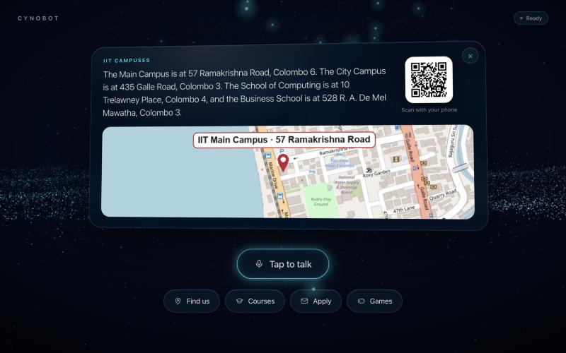

Repetitive enquiries
The same questions at the front desk take up staff time all day.
University and industry assistant robot
The robot receptionist that greets, guides and entertains your visitors.
A standing, human-sized robot that talks, listens, sees and helps. It greets visitors at the university entrance, answers their questions, shows the way, and keeps them company with quick games while they wait.
Happy: ready to greet visitors
Move your cursor around. The eyes follow you, just like the robot looks at a visitor. Click the buttons above to switch CYNO BOT's expression.
Where is the building? When is the event? How does this procedure work? Staff are busy, first-time visitors get lost, and people waiting have nothing to do.
The same questions at the front desk take up staff time all day.
Service robots are mostly imported, expensive and hard to connect to local information.
Most kiosks give visitors no reason to stop and interact.
Reception points rarely watch for poor air quality or fire.
The hardware and software stay the same. CYNO BOT switches between helping visitors and entertaining them.


Visitor help, games, education and safety on one platform. It only loads what the current mode needs, so it stays responsive.
Wake word, noise cancellation, English speech recognition and natural replies.
Animated eyes that blink and look at the speaker, with happy, curious and sleepy moods.
Person detection and presence tracking. Face recognition is opt-in, with a privacy mode.
Riddles, memory match, picture puzzle, word chain and a runner game.
Optional name and purpose with consent, and staff alerts when help is needed.
AI tutor, quizzes, flashcards, Pomodoro timer and English speaking practice.
Air quality and flame detection, an alarm and SOS alerts to staff.
Safe, friendly small talk and jokes. It always says it is a robot.
Touchscreen for maps, schedules, games and QR codes.